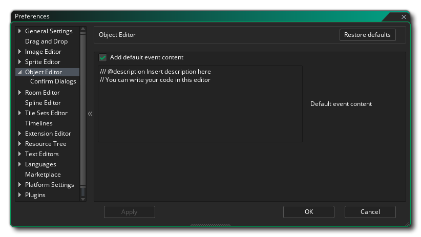

物体编辑器偏好设置 用于定义物体编辑器窗口的特定属性。主要部分包括以下选项：
- Add default help content: By default this option is
enabled and all it does is add a simple comment into the code
editor for all new events to remind you that you can add your
code there.
- Default event content: Here you can edit the comments that are added by default in the code window for new events.
物体编辑器还存在下面的子类别：

这一部分是使用物体编辑器时可能会显示的对话框，有下面可用的选项：
- Automatic response to DnD&trad; conversion to Gamemaker Language: You can use the right mouse button
within the Drag and Drop workspace to select the option to turn all Drag and Drop for that event into GML code. 这里默认的动作是如果你想继续会显示一个警告信息，但是你可以设置为“确定（Okay）”，然后在转换前这个对话框将不会显示。
- Automatic response to exceeding physics vertex limit: This option can be used to control the pop up message that is shown when you exceed the permitted vertex number in the physics shape editor. 这里默认的动作是显示警告信息，但是你可以设置“确定（Okay）”让对话框不显示。